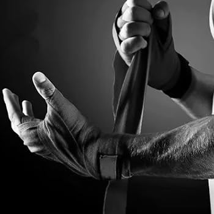

Cómo vendarse las manos

- Pasa el lazo por el pulgar. La venda debe quedar plana sobre el dorso de la mano, sin arrugas.
- Da 3 vueltas alrededor de la muñeca. Firmes, pero sin cortar la circulación.
- Sube en diagonal por el dorso, rodea la base del pulgar y vuelve a la muñeca. Repite una vez.
- Con la mano abierta y los dedos separados, da 3 vueltas alrededor de los nudillos.
- Desde la muñeca, cruza el dorso y pasa la venda entre el meñique y el anular, por la palma, y regresa a la muñeca. Repite entre anular y medio, y entre medio e índice.
- Da una última vuelta sobre los nudillos y regresa a la muñeca.
- Termina con vueltas en la muñeca hasta acabar la venda y fíjala con el velcro.